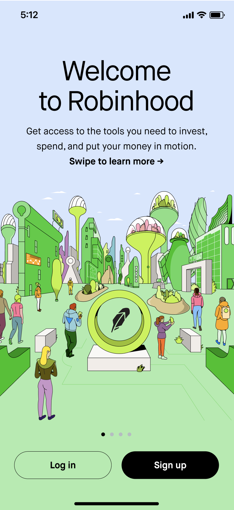

Onboarding redesign
Restructured the onboarding flow with refreshed visuals and content aligned to 2022 brand identity standards.
Problem
The Robinhood onboarding flow was long, not structured well, and hadn't evolved to represent our current product offering.
Solution
We restructured the onboarding flow with refreshed visuals and content aligned to our 2022 brand identity standards.
My role
I drove UX content design, solicited and responded to stakeholder feedback, secured Legal and Compliance approvals, and communicated implementation details to frontend engineering.
I was brought into this project later than I would’ve liked. The onboarding team had been operating without content design support for a few months at that point, so the product designer had forged ahead and the visual design + structure of the screens were pretty much locked by the time I got involved. While this isn’t my ideal working model, it was still a challenge to define how we wanted to introduce our product offering and properly set expectations for a long flow. I saw that content can still have an impact, even later in the design process.
Designs
I worked through every screen in the onboarding flow, ensuring copy was clear, aligned to brand voice, and addressed user needs at each step.

Welcome
Overview of Robinhood offerings: "invest, spend, and put your money in motion."
Outcomes
This project established a foundation for future experiments with consistent tone, style, and terminology across the onboarding flow.